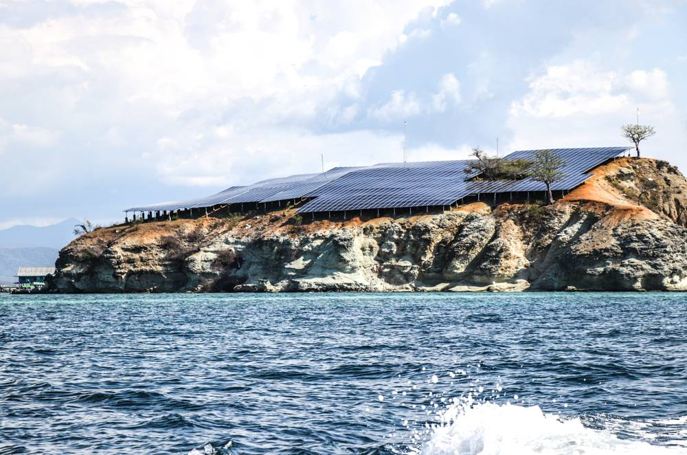

인도네시아 '마을 태양광 100GW'에 협동조합 8만 곳 동원…실제 운영은 1%, "위에서 만든 껍데기 조합" 우려

3년 안에 100GW·약 710억 달러 계획…과거 마을 태양광은 관리 주체 없어 '부서진 기념비' 됐다
인도네시아 정부가 3년 안에 농촌에 태양광 100GW를 깔고 마을 협동조합 8만 곳에 운영을 맡기겠다는 계획을 추진하고 있지만, 실제 가동 중인 조합은 6월 기준 1,061곳으로 1% 남짓에 그친다. 프라보워 수비안토 대통령은 8월 25일 발리에서 6개 주 14개 사업, 약 5.3GW로 이 계획을 출범시켰고, 정부는 사업비를 약 1,140조 루피아(약 710억 달러)로 잡았다. 목표를 맞추려면 해마다 약 33GW를 지어야 해 지금까지의 설치 실적을 크게 넘어선다. 2011~2015년 지은 공동체 태양광 500곳 가운데 2015년까지 적어도 10%가 고장 났고, 2018년 20억 루피아를 들인 바탐 인근 므찬섬 설비도 관리 기술과 수리비가 없어 제대로 돌지 않는다. 시민단체 쪽은 이번 조합들이 주민이 스스로 돈을 모아 만든 것이 아니라 정부 지시로 급히 세운 '위에서 아래로' 조직이라며, 기존 협동조합과 손잡고 혼합 금융으로 운영비를 마련해야 한다고 지적했다.
시민에너지 관점
전력회사가 직접 운영하는 섬 태양광 6곳(775kWp)이 897가구에 전기를 대며 디젤 시절의 3분의 1도 안 되는 요금을 받는 사례에서 보듯, 마을 태양광은 제대로 운영되면 분명한 효과를 낸다. 문제는 설비를 먼저 짓고 나중에 관리할 사람을 찾는 방식이며, 독일·덴마크의 에너지협동조합이 오래 버틴 것은 주민이 직접 출자하고 처음부터 운영 책임과 수리 적립금을 갖췄기 때문이다. 이름만 협동조합이고 주민의 돈과 결정권이 없는 구조로는 같은 실패를 되풀이할 수밖에 없다. 우리 햇빛소득마을도 선정 숫자보다 마을마다 운영 주체·교육·장기 수선 재원이 갖춰졌는지를 먼저 따져야 한다.
출처: Green Central Banking 2026-11-12 Muhamad Ishlahuddin 원문 보기
インドネシア「村の太陽光100GW」に協同組合8万カ所を動員…実際の稼働は1％、「上から作った器だけの組合」と懸念
3年で100GW・約710億ドルの計画…過去の村の太陽光は管理主体がなく「壊れた記念碑」に
インドネシア政府は3年以内に農村へ太陽光100GWを導入し、村の協同組合8万カ所に運営を任せる計画を進めているが、実際に稼働している組合は6月時点で1,061カ所と1％余りにとどまる。プラボウォ・スビアント大統領は8月25日、バリ島で6州14事業、約5.3GWでこの計画を始動させ、政府は事業費を約1,140兆ルピア（約710億ドル）と見積もった。目標達成には毎年約33GWを建設する必要があり、これまでの導入実績を大きく上回る。2011～2015年に建てたコミュニティ太陽光500カ所のうち2015年までに少なくとも10％が故障し、2018年に20億ルピアを投じたバタム近郊のムチャン島の設備も管理技術と修理費がなく十分に動いていない。市民団体側は、今回の組合は住民が自ら資金を出し合ったものではなく政府の指示で急ごしらえした「トップダウン」の組織だとして、既存の協同組合と組み、ブレンデッド・ファイナンスで運営費を確保すべきだと指摘した。
市民エネルギーの視点
電力会社が直接運営する島の太陽光6カ所（775kWp）が897世帯に電気を送り、ディーゼル時代の3分の1にも満たない料金で済んでいる例が示すように、村の太陽光はきちんと運営されれば明確な効果を生む。問題は設備を先に建て、後から管理する人を探すやり方であり、ドイツやデンマークのエネルギー協同組合が長く続いたのは、住民が直接出資し、最初から運営責任と修繕積立金を備えていたからだ。名ばかりの協同組合で住民のお金と決定権がない構造では、同じ失敗を繰り返すしかない。韓国の日差し所得村も、選定数より村ごとに運営主体・教育・長期修繕財源が整っているかを先に確かめるべきだ。
出典: Green Central Banking 2026-11-12 Muhamad Ishlahuddin 原文を読む
印尼“乡村太阳能100GW”动员8万家合作社…实际运营仅1%，被批“自上而下的空壳合作社”
计划3年内建成100GW、耗资约710亿美元…过去的乡村太阳能因缺乏管理主体沦为“破碎的纪念碑”
印度尼西亚政府正推进一项计划，要在3年内为农村建设100GW太阳能，并交由8万家乡村合作社运营，但截至6月实际运作的合作社仅1,061家，约占1%。普拉博沃·苏比安托总统8月25日在巴厘岛启动该计划，首批为6个省的14个项目、约5.3GW，政府估计总投资约1,140万亿印尼盾（约710亿美元）。要实现目标，每年须新建约33GW，远超以往装机纪录。2011至2015年建成的500个社区太阳能系统中，至2015年至少10%已损坏；2018年投入20亿印尼盾的巴淡附近梅灿岛设施，也因缺乏维护技术和维修资金而无法正常运转。民间团体指出，这批合作社并非居民自行集资成立，而是按政府指令仓促设立的“自上而下”组织，应与既有合作社合作，并以混合融资解决运营经费。
市民能源视角
由电力公司直接运营的6座海岛太阳能设施（775kWp）为897户供电，电费不到柴油发电时代的三分之一，说明乡村太阳能只要运营得当就有明显成效。问题在于先建设备、事后才找管理者的做法；德国和丹麦的能源合作社之所以能长久运转，是因为居民直接出资，并从一开始就具备运营责任和维修储备金。只有合作社之名、却没有居民资金和决策权的结构，只会重蹈覆辙。韩国的阳光收入村也应先确认每个村庄是否具备运营主体、培训和长期维修资金，而不是只看入选数量。
来源: Green Central Banking 2026-11-12 Muhamad Ishlahuddin 查看原文
Indonesia enlists 80,000 cooperatives for 100GW village solar, but only 1% operate as critics warn of 'top-down shells'
A three-year, roughly US$71bn plan follows earlier village systems that became 'broken monuments' for lack of an operator
Indonesia plans to install 100GW of solar in rural areas within three years and have 80,000 village cooperatives run the microgrids, but only 1,061 cooperatives, about 1%, were operating as of June. President Prabowo Subianto launched the programme in Bali on August 25 with 14 projects of about 5.3GW across six provinces, and the government puts the cost at around Rp1,140 trillion (about US$71bn). Meeting the target would require roughly 33GW a year, far beyond anything the country has built before. Of 500 community solar systems built between 2011 and 2015, at least 10% had broken down by 2015, and a Rp2bn system installed in 2018 on Mecan Island near Batam no longer works properly because villagers lacked the skills and money for repairs. Civil society groups say the new cooperatives were set up hastily on government orders rather than by residents pooling their own money, and urge partnering with existing cooperatives and using blended finance for operating costs.
Citizen Energy View
Six utility-run island solar systems totalling 775kWp now supply 897 households for less than a third of what they paid for diesel, which shows village solar works when it is properly operated. The problem is building first and looking for an operator later; Germany's and Denmark's energy cooperatives have lasted because residents invested directly and had operating responsibility and repair reserves from day one. Cooperatives in name only, without residents' money or decision-making power, will repeat the same failures. Korea's Sunlight Income Villages should likewise check that each village has an operator, training and long-term repair funds before counting how many sites were selected.
Source: Green Central Banking 2026-11-12 Muhamad Ishlahuddin Read the original